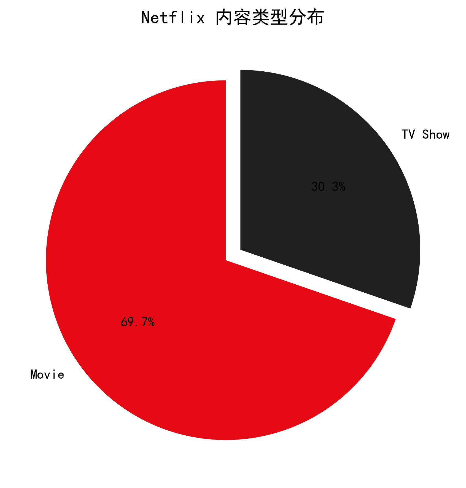
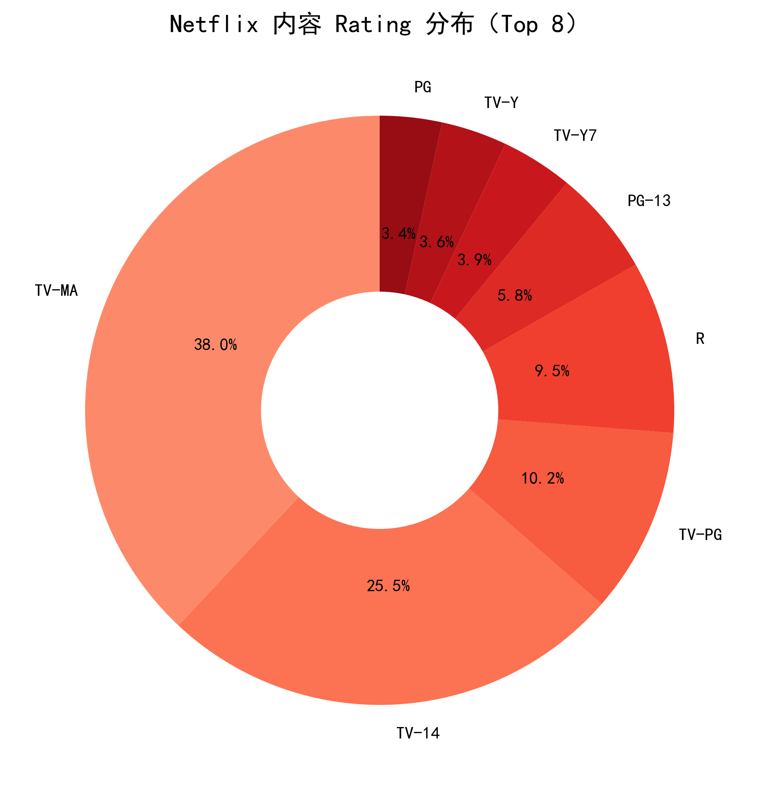
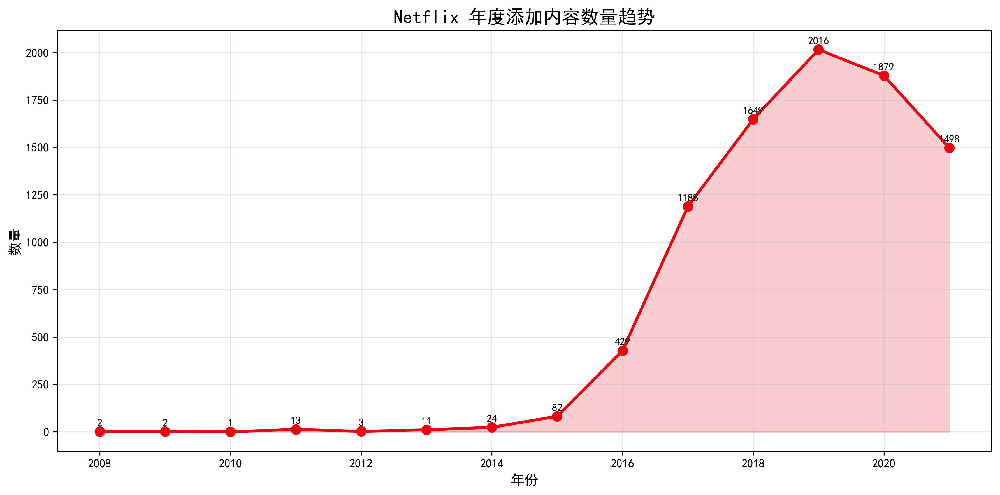
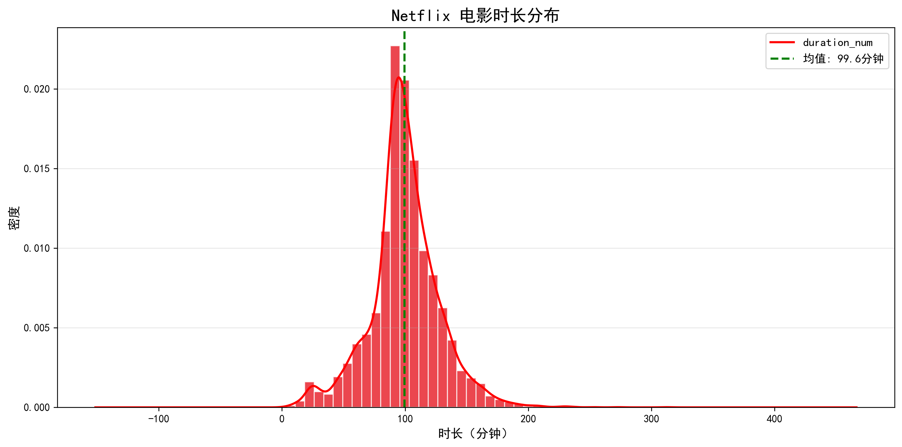
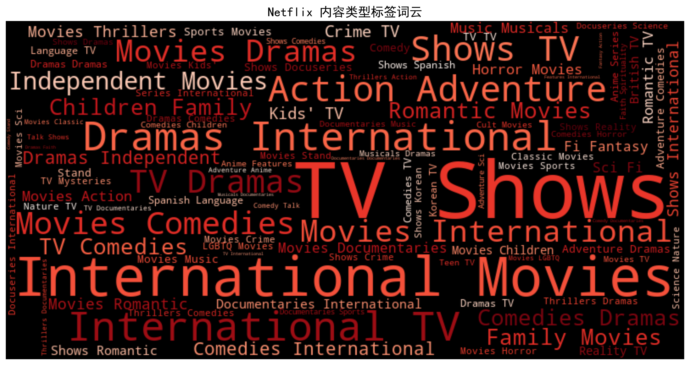
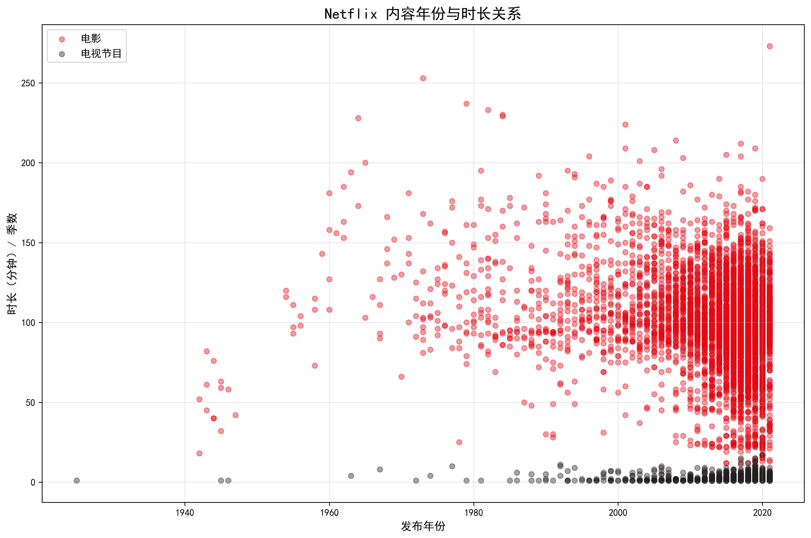
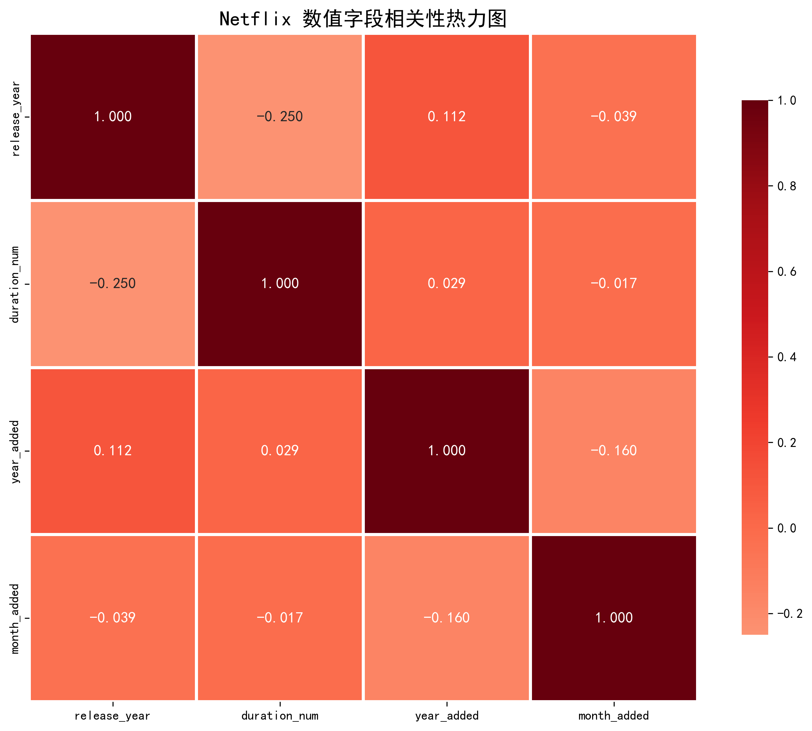
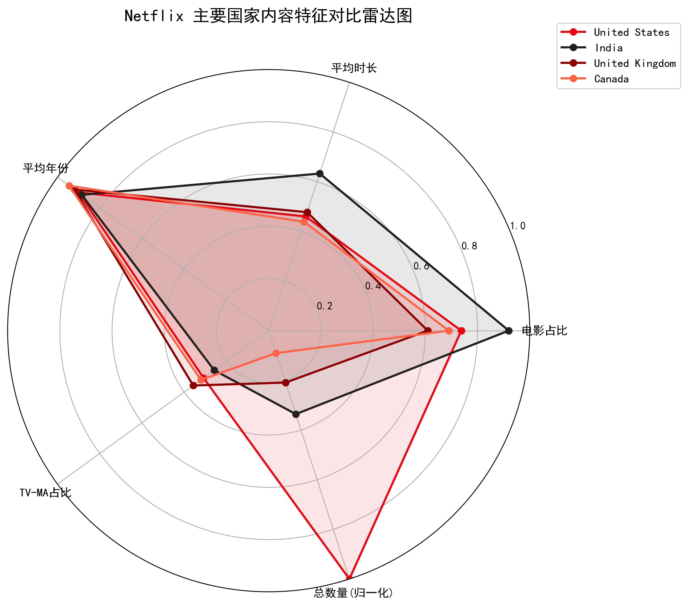
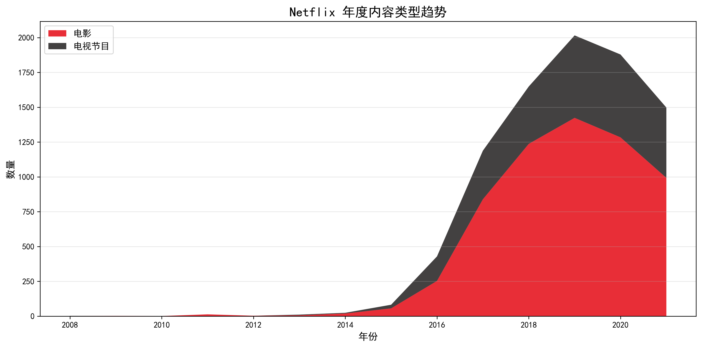
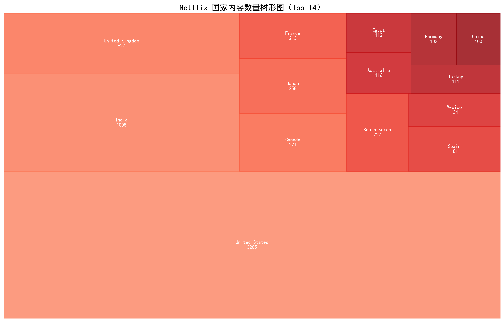

10种不同类型的可视化图表，展示数据分析结果










饼图展示电影与电视节目的比例分布； 环形图展示内容分级（Rating）的分布情况； 折线图展示Netflix年度内容添加数量的变化趋势。
直方图展示电影时长的概率分布； 词云图以文字大小展示内容类型的频率； 散点图展示发布年份与时长的关系。
热力图展示数值变量之间的相关性强度； 雷达图以多维度对比主要国家的内容特征。
堆叠面积图展示电影与电视节目数量随时间的累积趋势； 树形图以矩形面积展示各国家内容数量的层级结构。